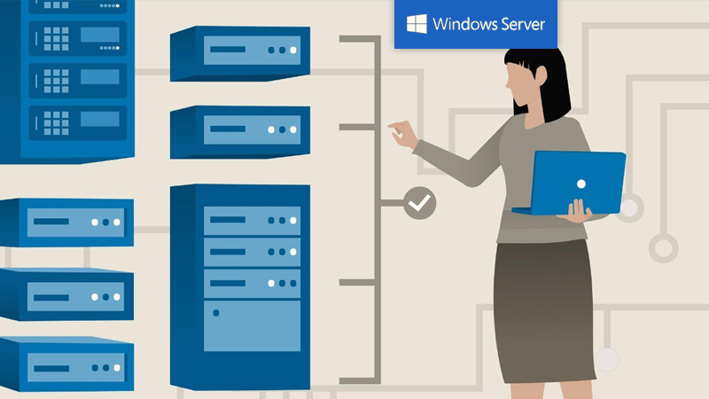

Sistema operativo de servidor de confianza utilizado por muchas empresas para
gestionar sus redes y servidores con seguridad y eficiencia

¿QUÉ ES?
Windows Server es un sistema operativo de servidor desarrollado por Microsoft. Es un sistema
operativo altamente personalizable y escalable que se utiliza para alojar y gestionar aplicaciones
y servicios en red en una amplia gama de entornos empresariales. Windows Server ofrece una variedad
de características y herramientas que lo hacen fácil de usar y administrar, y se ha convertido en
una opción popular para muchas empresas.
OBJETIVO
El objetivo principal de Windows Server es proporcionar una plataforma segura y estable para alojar
y gestionar aplicaciones y servicios en red en una variedad de entornos empresariales. Otros
objetivos de Windows Server incluyen:
Proporcionar herramientas de administración y monitoreo fáciles de usar para simplificar
la gestión de servidores y redes.
Ofrecer una amplia compatibilidad con software y hardware de terceros.
Proporcionar un alto grado de escalabilidad y personalización para satisfacer las
necesidades
específicas de cada empresa.
USOS
Windows Server se utiliza en una variedad de entornos empresariales para alojar y gestionar
aplicaciones y servicios en red. Algunos ejemplos de usos comunes de Windows Server
incluyen:
Alojamiento de sitios web y aplicaciones web.
Alojamiento de servicios de correo electrónico y colaboración.
Alojamiento de bases de datos y aplicaciones de negocio.
Gestión de la red y los sistemas de seguridad.
VENTAJAS
Amplia compatibilidad con software y hardware de terceros.
Herramientas de administración y monitoreo fáciles de usar.
Alta escalabilidad y personalización.
Soporte de virtualización de servidor.
Alto grado de seguridad y fiabilidad.
DESVENTAJAS
Costo relativamente alto en comparación con otros sistemas operativos.
Requiere un hardware robusto para funcionar correctamente.
Puede ser más complicado de configurar y administrar que otros sistemas operativos.
Requiere una licencia de usuario o de servidor para cada usuario o dispositivo que se
conecte al servidor.